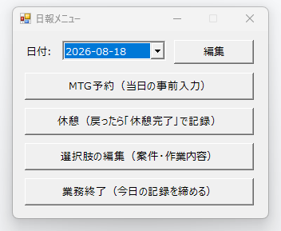
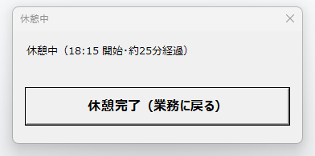
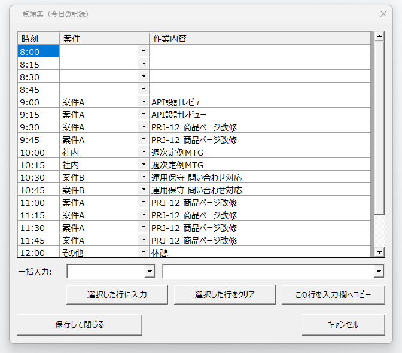
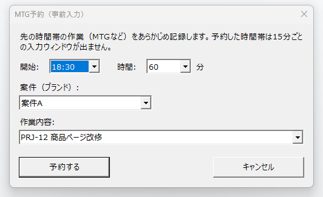
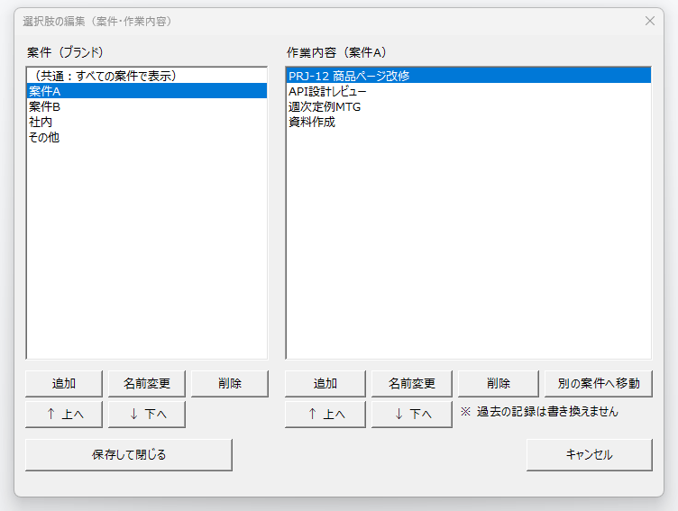

Own Product
日報を、あとで書かない。
15分ごとに「これからやる作業」を尋ね、案件と作業内容をCSVに積み上げていくWindows常駐ツールです。一日の終わりに表で確認して締めると、月次の集計にそのまま使える記録が残ります。自社の業務のために内製したものを、そのまま無償で公開しています。
※ 本ツールは当社が自社の業務のために内製し、日々使っているものをそのまま公開したソフトウェアです。MITライセンスの「現状有姿」提供であり、動作の保証・サポートを伴う商品ではありません。導入・運用のご相談はお問い合わせから承ります。
日報の「よくある困りごと」
思い出せない
終業時にまとめて書こうとすると、午前中に何をしていたかはもう記憶が曖昧。日報の精度が日々落ちていく。
粒度が粗くなる
「終日：開発」のような一行になりがち。月次報告や工数集計に使おうとしても、案件別の内訳が出せない。
書くこと自体が負担
一日の最後に残る「重いタスク」になり、後回し・書き忘れが起きる。翌日まとめて書くと精度はさらに下がる。
原因はひとつ。「あとで、思い出して書く」から。そこで、記録の向きを逆にしました。
「思い出して書く」から、「始める前に宣言する」へ
従来の日報
作業する → 記憶をたどる → 日報を書く
記録の品質が「記憶力」と「終業時の余力」に依存する。
この仕組み
次の作業を宣言する → 作業する（記録は済んでいる）
15分区切りごとに「これからやること」を選ぶだけ。記憶に頼らない。
一日の流れ
- 起動：デスクトップのショートカットから起動し、「業務開始」を押した時点から記録が始まります（ショートカットは初回起動時に作成され、消えても起動のたびに作り直されます）。
- 日中：15分区切りで入力ウィンドウが自動で現れ、次の作業を選びます。常駐の「日報メニュー」からは、編集・MTG予約・休憩がいつでも行えます。
- 終業：一日の記録が表で表示されるので、確認・修正して「締め」でCSVを保存します。
- 月次：15分粒度・案件別のCSVが日々貯まっているので、集計してそのまま報告書の元データにできます。
画面
※ 掲載している画面の案件名・作業内容は、すべて資料用のダミー値です。






成果物は、素直なCSV
1日1ファイル・1行が15分枠。UTF-8（BOM付き）なのでExcelでそのまま開けます。ピボット集計すれば案件別・作業別の時間が出ます。
日報ログ\日報ログ_2026-07-31.csv
| 日付 | 時刻 | 案件 | 作業内容 |
|---|---|---|---|
| 2026/07/31 | 9:00 | 案件A | API設計レビュー |
| 2026/07/31 | 9:15 | 案件A | API設計レビュー |
| 2026/07/31 | 9:30 | 案件A | PRJ-12 商品ページ改修 |
| 2026/07/31 | 9:45 | 社内 | 週次定例MTG |
| 2026/07/31 | 12:00 | その他 | 休憩 |
- 休憩も1行として残るので、空白が「入力し忘れ」なのか「休んでいた」のかを後から迷わない。
- 選択肢の元は
案件.txtと作業名.txtのテキスト2ファイルだけ。専用の形式もデータベースもない。 - ExcelでCSVを開いて日付や時刻の書式が変わっても、読み込み側で吸収します。
技術構成
設計・実装は、対話型のAI開発ツールと相談しながら進めました。何を作るか・どこで妥協するかを人が決め、実装と検証を任せる進め方の記録を、紹介資料の付録にまとめています。
使ってみる
- 下のボタンからZIPをダウンロードし、消えない場所（ドキュメントなど）に展開します。
- フォルダ内の
日報入力.batをダブルクリックすると、デスクトップに「日報入力」のショートカットが作られます。 - 翌日からは、そのショートカットから起動します。案件・作業内容の選択肢は、初回起動時に作られる
日報設定フォルダのテキスト、または「選択肢の編集」画面から自分のものに変えてください。
ダウンロード・改変・再配布はMIT Licenseの条件に従ってご利用ください。本ソフトウェアは「現状有姿」で提供され、明示・黙示を問わずいかなる保証も行いません。利用によって生じた損害について当社は責任を負いかねます。組織のセキュリティポリシーによってはスクリプトの実行が制限される場合がありますので、社内規程をご確認のうえご利用ください。
紹介資料
仕組み・画面・データ形式をまとめたスライド（全24枚）を公開しています。本編13枚が「何を作ったか」、付録11枚が「AIと相談しながら、どう作ったか」です。
お問い合わせ
「記録が残らない」「集計に手間がかかる」といった日々の業務の詰まりは、手を動かす人の近くで設計するほど素直に解けます。同じような業務の仕組みづくり、システム化の入口のご相談は、お問い合わせからお気軽にご連絡ください。当社の対応領域はトップページに掲載しています。